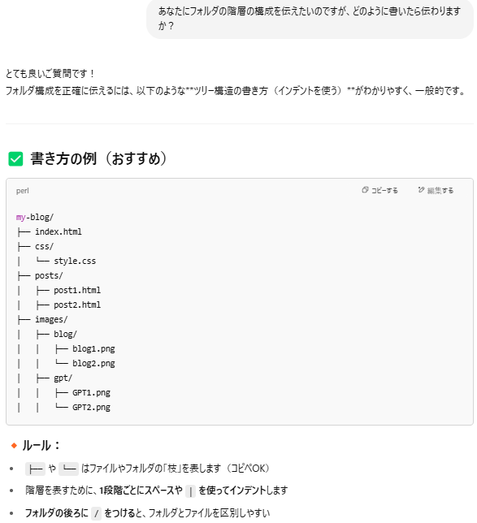
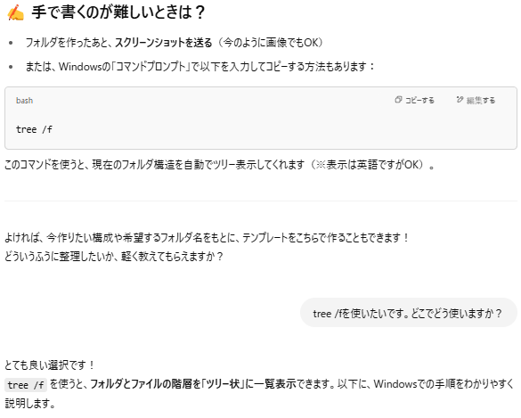
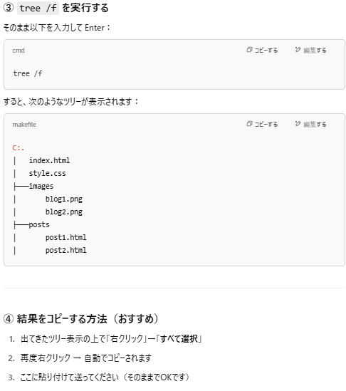
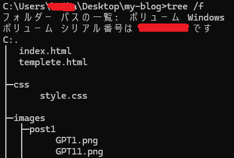

カテゴリ:ブログ作成～公開まで～
投稿日：2025年5月7日
寄り道その2、今回はフォルダの階層を取得します。
あまり使う機会は無さそうですが前回のフォルダ内を整理するで使う機会があったので載せておきます。
前回の記事ではフォルダの構成を変更したことで画像ファイルが表示されなくなり、詳しく解析してほしかったのでまず伝え方を尋ねました。
そうそうこんなの！手打ちやコピペして編集するにはこのような形式でいいそうだ。
手で書くのが難しいときは？
素晴らしい提案！！！でもどこで使うんだろう。。。
早速使い方を聞いてみます。
ChatGPTの左上にcmdと書いてある場合はコマンドプロンプトで入力するみたいですね！
更にこのコードの意味も解説してくれています。
cdはフォルダを移動するという意味みたいです！
コマンドを入力すると、コードを打ち込む場所がmy-blog内になりました。
ここにtree /fを打ち込めばいいみたいです！
うおおお！！！でてきたーー！！！
ChatGPTの返答ではこれを右クリックするとメニューが出ると言っていましたが、
出てこなかったので質問したところ最近のWindowsでは出てこないようです。
なので普通にドラッグしてコピーしました。
これでフォルダ階層を伝えたいときは取得できるようになりましたね！
今回はここまで！